Water is one of the best looking effects with the Unreal Engine. To make water you simply make a zone, add a WaterZoneInfo, and give the "top" a water texture. That's basically it.
Start by loading a texture set (whatever you like) and then loading Liquids.utx. Okay, pick a texture from the texture pack you selected (anything but a water texture) and then make a 512 x 512 x 512 cube and subtract it from the world.
Now, resize the red brush to 512 x 384 x 384 and position it against the floor in the middle of the room (like below) and subtract it. You should now have a huge pit in the middle of the floor.
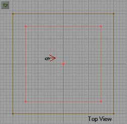 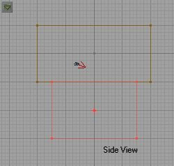Right click the sheet button and set the sheet size to 384 x 384 and make sure Floor/Ceiling is selected. Position the sheet so that it fits perfectly over the opening of the pit and just below the edge (see below).
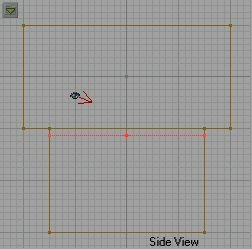Select a nice looking water texture from Liquids.utx and select it (making sure no textures are selected in your map). Now click Add Special Brush and from the drop down menu choose Water (and make sure all the buttons are selected like below).
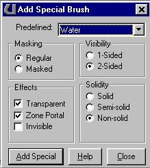Add the special brush. Now add a light and a PlayerStart and you should end up with something like this:
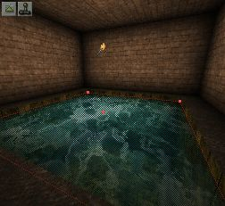Now, in the Browser, go to Classes, Info, ZoneInfo, and select WaterZoneInfo. Add a WaterZoneInfo inside the area where the water will be.
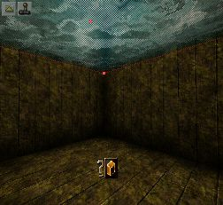Rebuild your level, save it if you like and test it. You should have a nice little pool of water in the center of your room. You can apply this to any size, shape water zone. Just make the area where the water is to be, zone it off, giving a water texture to the surface of the water, add a WaterZoneInfo. That's all there is to it. You can now add effects to the water texture like small wavy or big wavy to give it more motion if you like.
Note: Some people will "intersect" their water sheet when adding it to an odd shaped pool. I have had much better luck (not to mention fewer BSP errors) by making the water sheet a square, but big enough to cover the opening of the pool and letting the rest "overhang."
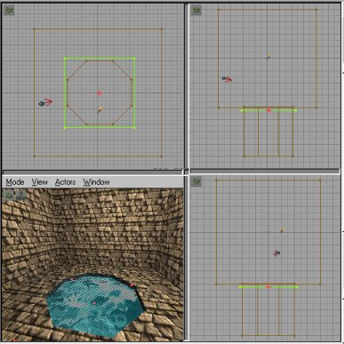Waterfalls aren't that difficult to make. Making them look good takes practice. Use pictures of waterfalls as a guide whenever possible. I will teach you the basics on making them, but you will have to practice to make the "right."
Okay. Kill the old map (or save it if you like) and start a new one. Again, start with a 512 x 512 x 512 room. Subtract it. Now make your brush 256 x 256 x 512 and align on the floor as we did the pool. Subtract it and you should have a trench like below.
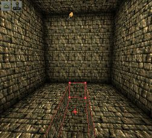Now resize the brush to 512 x 256 x 32. Align it against one wall as shown below, then intersect it and then subtract it.
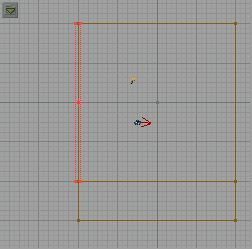 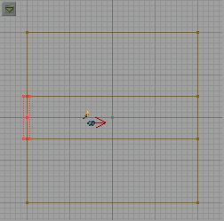Now add water sheets (using the sheet tool and special water brush) to the trench (just like we did the pool) and the cut we made in the wall. You should end up with something like this:
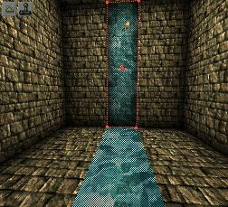Now add a WaterZoneInfo in the trench. Add light(s) and a PlayerStart and rebuild. You can go test the map if you like now. The water fall is there but sure doesn't look real does it? To make it look like the water is actually falling we need to set some texture properties. Select the waterfall texture and bring up it's properties. First go to the Scale tab and under Custom Scaling leave the U the same and set the V to something about 8ish.
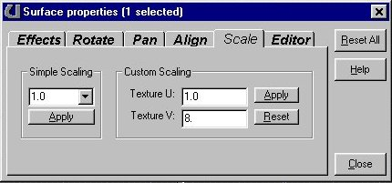Now go to the Effects tab and check V-Pan.
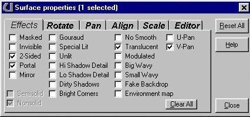Note: Look at the water fall in the 3D view (making sure the little joystick icon is clicked in that view). Your water fall may appear to be falling "upwards." If this is true then got to the Rotate tab and click FlipV.
Your water should appear to be falling now. You can also set the v-pan effect on the "stream" to make it appear to flow.
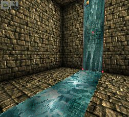Tips
The water fall we made works, but is not very realistic. First of all the water doesn't come from anywhere in particular and doesn't go anywhere. If we wanted this to appear real, we could make a ledge above for the water to be falling from and make an opening on the opposite wall for the water to be flowing into.
These are the kinds of things I was talking about when I said you would have to practice to make it right. There are several water textures in Unreal. Look around the different .utx files and find ones you like (GenFluid, Liquids, FireEng, HubEffects, etc...). Some work better than others for water falls.
Slime and lava are made the exact same way as water. just insert the proper ZoneInfo and select textures to match.
Note: A lot of people have been asking about rising water effects, to flood a room or something. You can't do this with the Unreal Engine without writing a script for it. You can make a moving water sheet, but not the zone portal. Zone portals are stationary in Unreal and cannot move. You can make it LOOK like water is rising or falling (using a moving sheet textured like water) but you have to keep it shallow enough that you cannot go under to find that it is not actually water at all.
Also, waterfalls should be made narrow enough that you cannot swim up them. If you have a water fall that is part of a water zone and it is wide enough (32 units I believe) you can "swim" up the water fall. This might be a neat trick in certain levels, but not very realistic.
If you test your level after adding water and the whole room is filled with water (not just "under" the water brush) then you have a zone portal leak somewhere. Check your sheets and delete and re add them if you have to. Protruding objects: You can make things sticking up out of the water, but you have to add them BEFORE you add the water sheet. You may stuff under the water after you add the water sheet (zone portal) as long as it doesn't touch the water sheet.
Play around with water and have fun. Try different things and see what looks good and what does and doesn't work. As always, if you have any questions e-mail me.
-Wolf